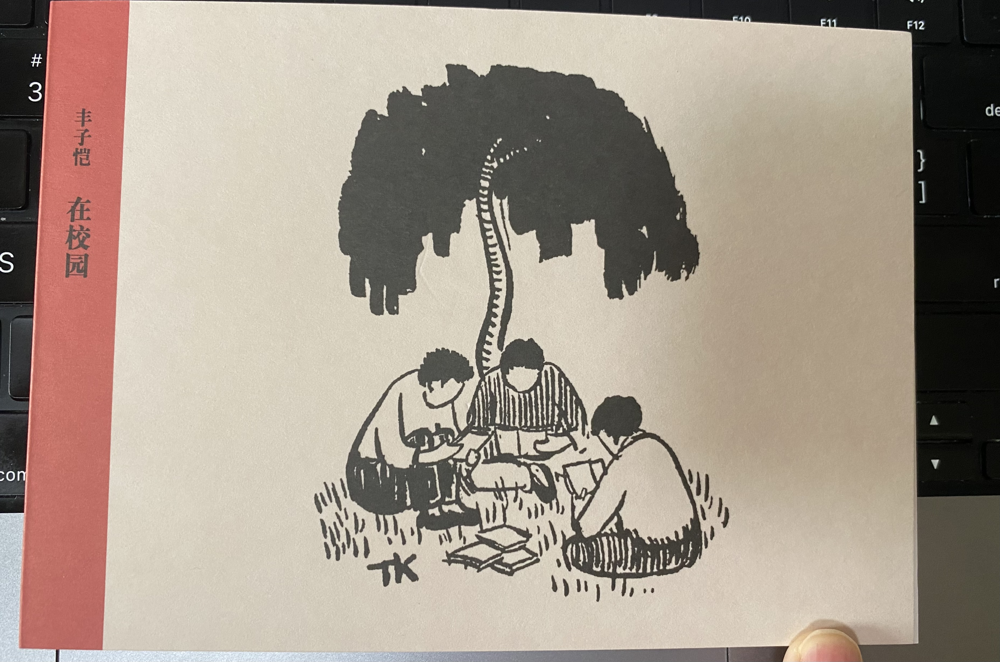

结论先行，先说说我是吃了什么药康复的：
- 第一晚和第二晚每次一粒对乙酰氨基酚
- 第二天白天吃了一小瓶桃罐头
是的，就这么些东西。
下边记录一些中间的过程。
第一天
12月13日，星期二
中午的时候嗓子开始不舒服，有点沙沙的感觉，而且腰有些酸，以为是坐姿有问题，总想躺着，多亏是在家办公，工作一会躺一会。
5:30左右测了个体温，37.3℃，没太当回事，但是明显感觉体力开始急剧下降。开完公司晚会后，7:30再次测了个体温 38.5℃，这时候已经完全不想动弹了，浑身发冷一直打寒颤，冷到想盖上10层棉被。
晚上挣扎着洗了澡，睡前吃了粒对乙酰氨基酚，钻被窝盖了两层被子，半昏半睡、睡一会醒一会，中间还出现过幻觉，虽然一晚上无法动弹没有测过体温，但我自己估摸着肯定到了40℃，晚上摸身上火烧火燎的，浑身疼，甚至蛋蛋也疼。。。
第二天
2022年12月14日，星期三
艰难的爬起床，浑身疼，那种疼像是跑了10公里步或者被揍了一顿似的，于是和老板请假，之后将手机通知关闭、静音。这一天除了吃饭喝水上厕所其余时间就是躺着，中间还吃了个黄桃罐头，冰冰凉凉的吃下去的时候很舒服。

就这么难受我还加持把今天的多邻国学习了，为了不破坏200多天的连胜记录😂
我把两层窗帘拉紧，灯关掉，屋里完全黑的，就这样睡一会、醒一会、刷一会小红书，这天还有些拉肚子，但不是很稀。晚上睡觉前吃了一粒对乙酰氨基酚。
晚上八点多睡的，到第二天早上5点，加上白天的时间，这应该是我近些年卧床时间最长的一次。
第三天
2022年12月16日，星期四
一觉醒来感觉舒服多了，测了下体温也基本退烧了，身上也没那么疼了，就是嗓子巨疼无比，开始咳嗽，咳嗽时喉咙和肺疼，能咳出浓痰。
考虑的目前是居家办公，也不用通勤，实在累了也可以躺会，于是就没有再请假，强行开机开始上班搬砖了。
下午的时候测了个抗原，阳气十足。

第四天（今天）
2022年12月16日，星期五
今天算起来是得病的第4天，嗓子有些疼、咳嗽，说话非常非常吃力且沙哑，除此之外就没有其他症状了。
嗅觉味觉还在，但是貌似不那么灵敏了，预计还需要3、5天才能转阴。
昨晚睡的有些晚，而且睡前玩了会手机，之前从来不玩，但是根据前两天生病的经验发现玩手机也能睡着。将近12点放下手机的时候感觉还是没有困意就开始看书，看到胳膊举不动书了放下书开始尝试入睡，两点多还是没睡着我意识到失眠了，于是起来吃了安眠药。
只有生病最严重的那两天我真正让自己放轻松了，不管再晚再难受也不会感觉有什么焦虑，不再考虑工作或者其他烦心的事情，可能是身体的本能告诉我狗命要紧，别考虑乱七八糟的了。
我得新冠后只耽误了一天工作，真是个合格的打工人。🙂
P.S. 我发现这几天都没有晨勃过了，可能是不行了吧。
我前几天续订了独库的2023全年阅读计划，今天刚好收到了一份读库提前送来的小礼物，如果今年让我推荐一本书的话，毫无疑问我会推荐读库，他不是一本书，而是一个每两个月发行一期的综合性人文社科读物，以中篇非虚构文章为主，内容包括传记、书评、影评、历史事件等。

